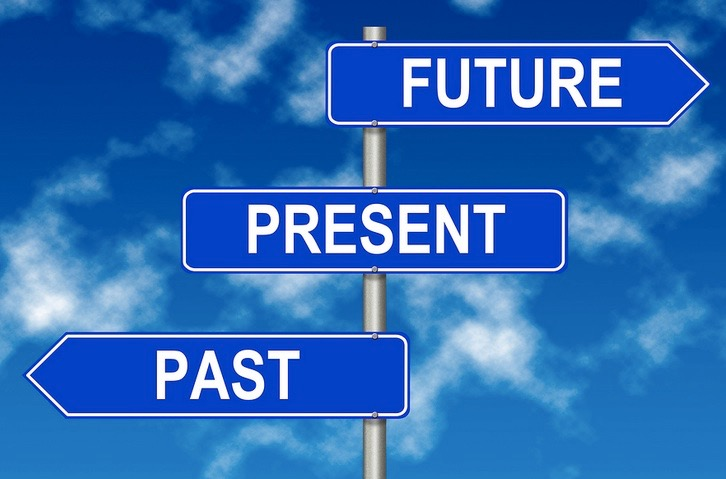

| Themes | Past | Present | Future |
|---|---|---|---|
| Style | |||
| Development | |||
| How present it is in the | |||
| How it is used in the | |||
| For what porpuse is it used in the | |||
| Who develops it in the | |||
| Who uses it in the | |||
| How many websites in the | |||
| Was it practical in the | |||
| Friendship | |||
| Social Media | |||
| Internet transaction | |||
| Music and Movies |
 We will compare many kinds of Themes in the past, present and future based on the digital world and its influences. Like Style, Development, How present and 10 other things.
It is like the first topic, but we will go more into detail about friendships.
It is like the first two topics, but now we will look at today. How influences our live? Can we live without that? Is this dangerous?
Surprise, surprise, it is like our third first themes, but now it is all about Internet Transactions. Is it safety? Which are the dangerous things about it. Why is it used so often?
Surprise, surprise, it is like our third four themes, but now it is all about Music and Movies. Can we live without that. Why it is so popular? How it was developed?
Now we test our visitors about their hobbies, what they do in free time, an so on. This we will change in a test. We ask the user something and give him some possible answers. Is no answer correct for him, he will tick: No one of the possible answers and then we can write the answer, he want to have. Then he continue with the test. We also will take the answer in our test, if it a good answer. For each answer he will get points. The amount of the points will show him at the end of the test the personally answer or him.
//Bootstrap